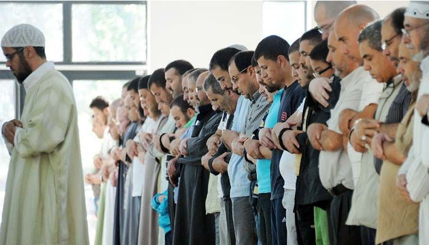

Apa Itu Shalat?

1. Apa Itu Shalat? (Pengertian & Kedudukannya)
Secara bahasa: Shalat bermakna doa atau permohonan kebaikan.
Secara istilah syar'i: Rangkaian ucapan dan perbuatan khusus yang diawali dengan takbiratul ihram dan diakhiri dengan salam, dikerjakan dengan syarat dan rukun tertentu untuk beribadah kepada Allah Ta'ala.
Kedudukan dalam Islam: Shalat merupakan rukun Islam kedua setelah dua kalimat syahadat dan tiang agama. Kewajibannya ditetapkan langsung saat peristiwa Isra' Mi'raj sebagai tanda kemuliaan dan urgensinya.
2. Syarat Wajib dan Syarat Sah Shalat
Syarat wajib shalat (hal yang membuat seseorang terkena kewajiban shalat):
Islam: Orang kafir asli tidak wajib menunaikan shalat selama belum masuk Islam (meski tetap dimintai pertanggungjawaban di akhirat).
Berakal: Orang gila atau hilang akal tidak terkena kewajiban shalat.
Baligh: Anak kecil belum terkena kewajiban shalat (namun orang tua diperintahkan melatih dan membiasakannya sejak usia 7 tahun, serta tegas mendidiknya pada usia 10 tahun).
Suci dari haid dan nifas (khusus wanita): Wanita yang sedang haid atau nifas tidak wajib shalat dan tidak sah jika mengerjakannya, serta tidak wajib mengqadha shalat yang ditinggalkan selama masa tersebut.
Telah sampai dakwah (menurut sebagian rincian ulama dalam pembahasan taklif).
Syarat sah shalat (hal yang harus terpenuhi agar shalat dinilai sah sebelum dan selama dikerjakan):
Masuk waktu shalat: Tidak sah mengerjakan shalat sebelum waktunya masuk.
Suci dari hadats kecil dan hadats besar: Berwudhu bagi yang berhadats kecil, dan mandi wajib bagi yang berhadats besar.
Suci badan, pakaian, dan tempat shalat dari najis.
Menutup aurat: Aurat laki-laki minimal antara pusar hingga lutut; aurat wanita merdeka dalam shalat adalah seluruh tubuh kecuali wajah dan telapak tangan (menurut mayoritas ulama).
Menghadap kiblat (ke arah Ka'bah, kecuali dalam kondisi uzur tertentu seperti safar/perang sesuai ketentuannya).
3. Perkara yang Membatalkan Shalat
Secara umum, shalat batal jika terjadi hal-hal berikut:
Berhadats (keluar angin/kentut, buang air kecil/besar, tidur pulas yang menghilangkan kesadaran, atau hilangnya akal).
Terkumpul atau terkena najis yang tidak dimaafkan pada badan, pakaian, atau tempat shalat.
Terbuka auratnya secara sengaja atau tidak disengaja lalu tidak segera ditutup saat diingat/disadari.
Berbicara dengan sengaja menggunakan ucapan manusia di luar bacaan dan dzikir shalat.
Banyak bergerak berturut-turut di luar gerakan shalat tanpa kebutuhan mendesak.
Makan atau minum dengan sengaja saat shalat berlangsung.
Meninggalkan salah satu rukun atau syarat sah shalat tanpa uzur yang dibenarkan syariat.
4. Hal-Hal yang Disunnahkan Terkait Waktu & Pelaksanaan Shalat
Menjaga waktu shalat dan bersegera menunaikannya saat waktunya tiba.
Shalat berjamaah di masjid bagi laki-laki, karena memiliki keutamaan berlipat dibandingkan shalat sendirian.
Khusyuk dan menghadirkan hati, yaitu memahami bacaan shalat, merenungkan makna gerakan, serta menjauhkan pikiran dari gangguan duniawi.
Melakukan sujud sahwi bila lupa melakukan bagian tertentu dalam shalat (seperti lupa tasyahud awal atau ragu jumlah rakaat) sesuai ketentuan fikih.